本篇是《Speculative Everything》一书第7章《Aesthetics of Unreality》的读书笔记，在纽约听说许多设计院校的中国学生都会阅读我的这个读书系列（请访问《异梦》专题），深感欣慰，觉得要继续写下去。
另一个平行世界，真实与虚幻搅碎成一种触发的力量，点醒观者思考那些不真实的、不切实际的、未知的可能性，这种力量便是存于虚实平衡之间的「美」。而对于平行世界的设计师们，真正的挑战在于虚实之界的拿捏，过真，则索然无味、过假，则黄粱一梦。
商业世界的设计师在用逻辑构建起来的上下文中期待建立一种参与模式（Engagement Model），希求用某个模型将观者或用户转化为被动的参与者，即是「系统的一部分」。而Speculative Design（以下简称SD）的设计师们所追求的，是在平常或不平常之下，诱引（Seductive）观者入思维漩涡，挣扎灵感的四肢，捕获诗意。
「禅有悟，山不是山」，只用只言片语，文学便可勾出人的魂，人性便「自觉」；而设计的幻术，把玩机器、材料、色彩、技术、系统，也可探索人性的可能。而本章所探讨的，便是有哪些设计手法，帮助SD设计师们，释放横跨虚实的「美」。
谐拟和混仿的陷阱
SD设计师经常遇到的是谐拟（Parody）和混仿（Pastiche）的陷阱。Parody的手法是用一种模仿的方式嘲讽原作品，这种嘲弄式的摹仿法有诙谐的一面，「曾为现代主义带来丰富的成果，它曾经为现代艺术孕育出一些极富奇姿异彩、叫人仿无可仿的独特风格（詹明信《后现代主义，或晚期资本主义的文化逻辑》）」；而Pastiche的方式则是用模仿的方式像经典致敬（参考）。
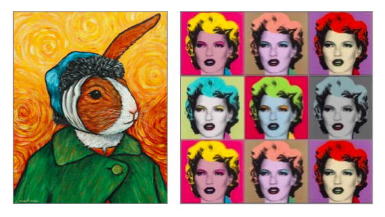
上左图是Parody的典型手法，彼得兔和梵高自画像的组合产生一种忍俊不禁的幽默；而左侧则是Banksy用Kate Moss向Andy Warhol致敬（或一种叫板），这便是Pastiche的手法，区别二者的关键在于前者重在嘲弄、后者重在模仿。
此上二法前者更重在娱乐、嘲讽、或者简单博得一笑、后者更是自我表达的一部分，无论是敬意还是叫板。而SD设计中所期待则是「引入思考、质疑、并开始想象」。为了避开俗套蹩脚的谐拟和混仿，有若干设计手法可以供SD设计师参考。
视觉
上世纪70年代，涌现了一大批科幻艺术的大师，虽未有CGI（computer-generated images）技术的帮助，宇航时代之美依旧似真似幻。
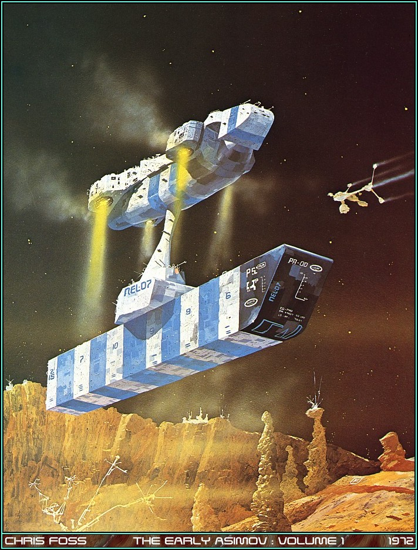
(Chris Foss为《The Early Asimov》阿西莫夫短片故事集绘制的封面之一，Chris Foss也是电影《银河护卫队》中千奇百怪宇宙飞船的绘制者)
而CGI技术又为设计师获得了新的能力：真实和虚幻的界限更加模糊，模糊中唤醒观者的思考，例如肺癌公益广告中使用电脑技术合成的儿童抽烟图。
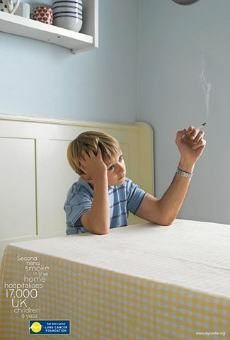 Chi and Partners for The Roy Castle Lung Cancer Foundation, Molly, Sam, Charlotte, 2008. Photograph by Kelvin Murray. Creative Team: Nick Pringle and Clark Edwards.
传统的绘画技艺也可构造虚拟世界，Paul Noble擅长于用铅笔在画纸上描绘「异城诺森（Nobson）」，一砖一瓦都是乌托邦式的「白日做梦」
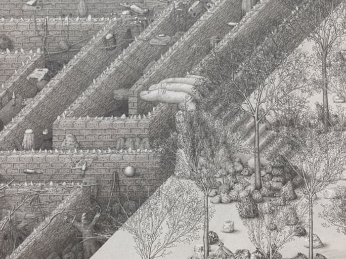 《诺森城的欢迎（Welcome to Nobson）》细部
更有艺术家Marcel Dzama把异梦从建筑与环境转移在人与活动，这幅《Poor Sacrifices of Out Enmity, 2007》体现着人类特殊群体中无聊的仪式感（Rituals）。
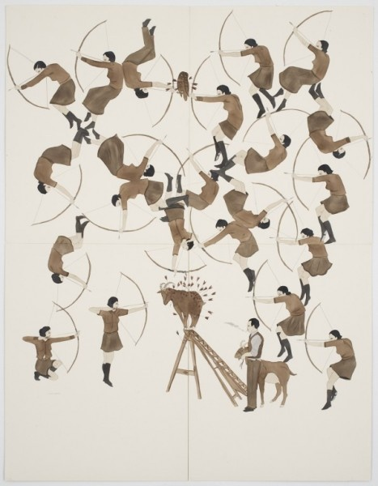
日本插画家横山裕一用卡通的形式表达另外一种对世界的认识，它有一种「闲得蛋疼的淡定感」，就像追赶新干线中白领的大雁。
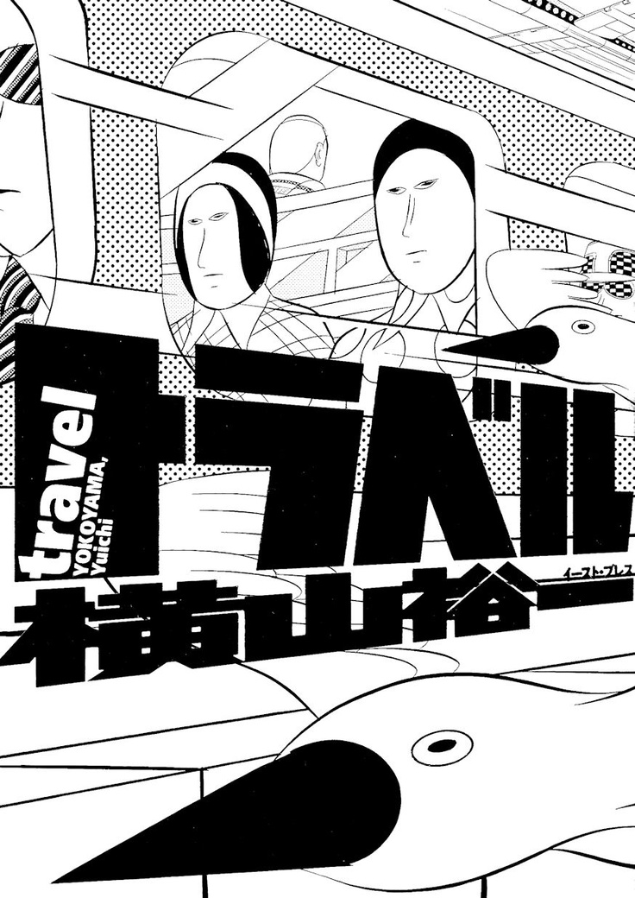
更极端的例子是Luigi Serafini被称为世界上最奇怪的书的《奇异世界的百科全书Codex Seraphinianus》，全书采用未知的某种语言完成，一本正经地解释另一个世界的寻常之物。
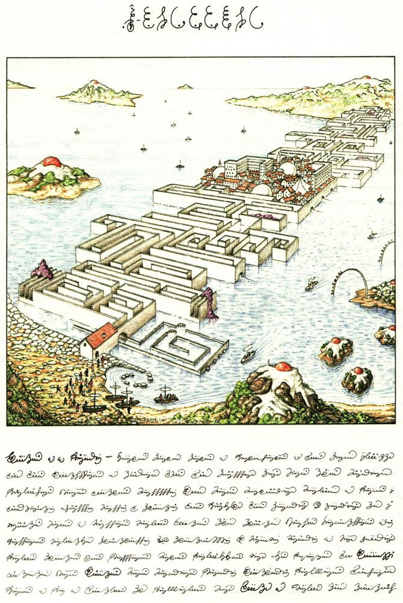
除了这些绘画作品，一些艺术家尝试更加让人难以区分的照片处理技术，制造出诸如Filip Dujardin《Fictions》系列中那些不可思议的建筑：
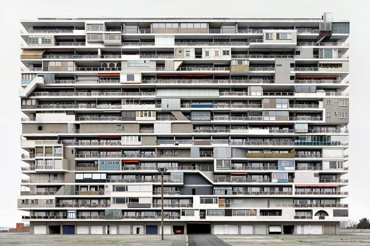
各种视觉手法的使用帮助设计师们模糊了真实与虚拟的世界，只有当界线被模糊，观者才会安静下来，放下固有观念和怀疑，开始思考属于他的平行世界，除了视觉手法之外，「模型道具」也可以作为虚构美学的载体。
道具
使用模型道具的关键在于「尽可能地减少物理细节」，例如Thomas Demand的很多作品总希望从现实中抽离一些东西，使得原本真实的场景变得有些虚假，人们开始不确定他们对真实世界的d判断。
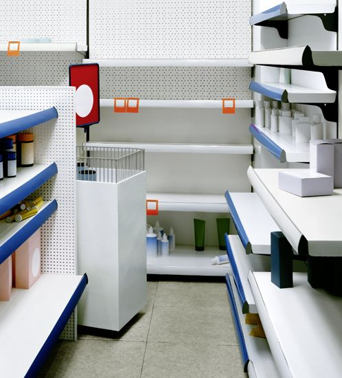
真实世界是繁复的，去除细节之后，人们才可以从抽象中获得思考的空间，而不是去纠结于功能。道具模型有时候变得会有些像玩具，有些设计师却利用了这一点。PostlerFerguson设计工作室的设计师设计了具有玩具感的「大家伙」——远洋巨轮，玩具感也暗含着科技乐观主义的幼稚。
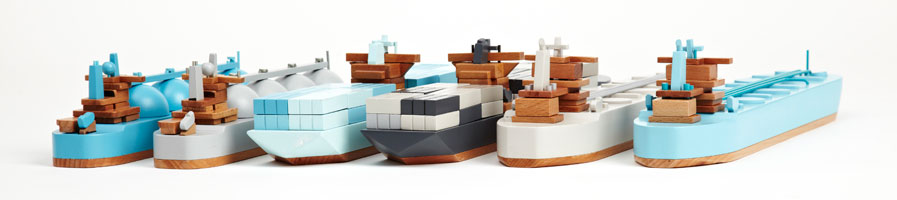
道具还可作为一个故事的印子，作品《麦高芬图书馆The MacGuffin Library (2008)》用一系列黑色聚合物制作的麦高芬（一部影片始终贯穿的某个物品，例如《活着》中的皮影、《指环王》中的魔戒）道具，分别代表一个故事的主线，例如下图中第一张「戈培尔的茶壶」讲述的是希特勒入住白金汉宫的故事。
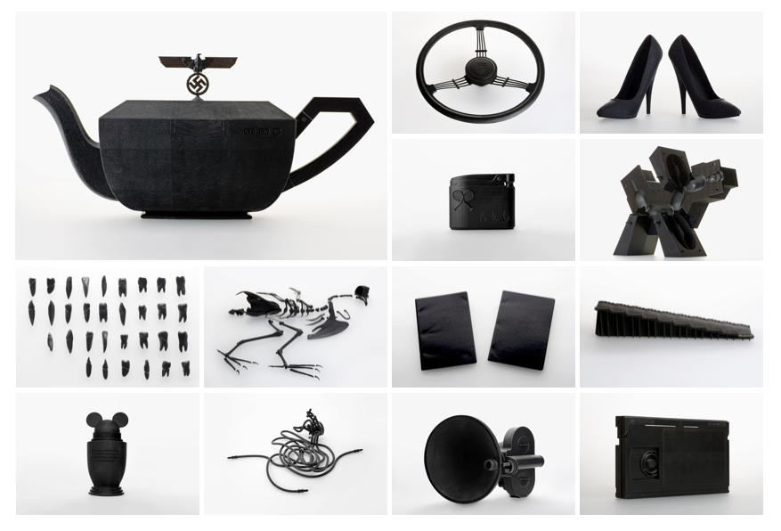
把道具之美推向巅峰的是El Ultimo Grito的《想象中的建筑Imaginary Architectures》。这个设计中使用精美的玻璃重新表达了现代社会的精神、物质、和社会之间的关系，每一个物件都尝试代表城市中的细小元素，它们像是一个个想象的钩，勾住观者在组合中思考城市未来的形态。
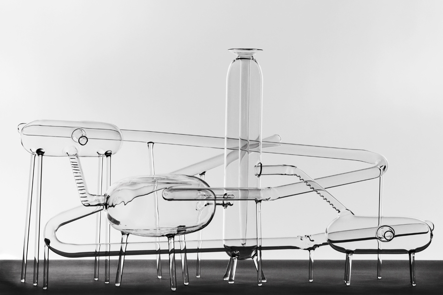
人也可以作为道具的一部分，通过形体、动作、表情附加给道具新的表现纬度，例如芬兰摄影师Juha Arvid Helminen在《看不见的帝国Invisible Empire》系列。Juha在赫尔辛基经历了示威活动，和芬兰警察的接触之后，他用作品探寻的是服从、标准、和统一背后的人性是否是压抑、空洞、和孤独的。
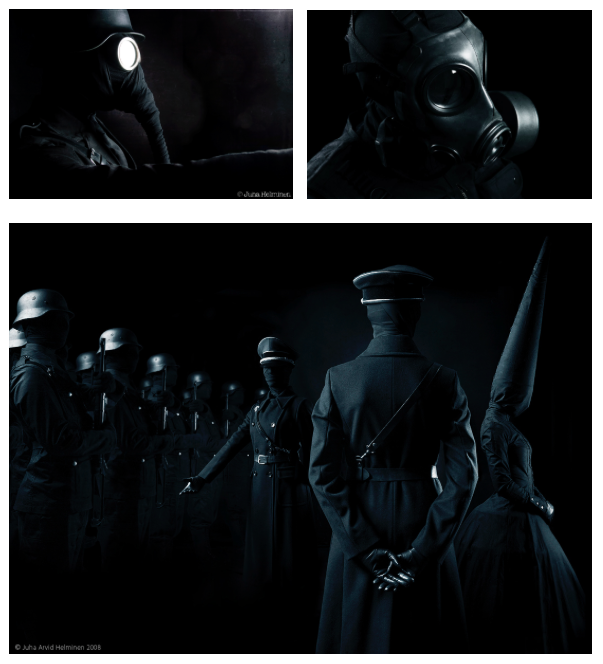
除去视觉作品和道具作品所利用的视觉和触觉之外，人类的感受还可以是多元的，艺术家们还使用各种空间和装置去创造一种气氛，在气氛中，观者获得启发。
空间
具有可能性的不单单只是未来，还有一个与现实平行的另一个现在，艺术家们通常使用大量的留白空间去表现深意，在留白中，观者有足够的空间投射自身的感受。被视为实验性纪录片的领导先驱，丹麦导演约根莱斯在1967年的十三分钟经典短片《完美人类 The Perfect Human》中使用了全白背景，用简单淬炼的画面重复日常动作，镜头精准捕捉、旁白呢喃流畅，全篇极富诗意，探究什么是完美？什么是完美的男人和女人？最终成为电影美学上的经典之作。
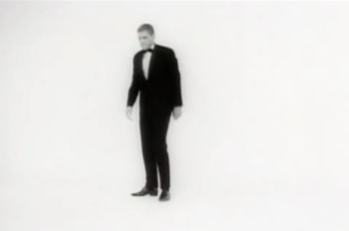
另一种构造空间而非未来的方式是对现有空间进行调整，在观者熟悉的场景中，植入新的概念，这也是许多写实主义科幻电影导演的手法，例如讽刺种族隔离制度的《第9区》以及充满写实风格的怪兽电影《科洛弗档案》。
构造新的空间也是许多科幻电影经常采用的手法，例如，1997年文森佐·纳塔利《心慌方Cube》中的立方体空间和1999年斯派克·琼斯《傀儡人生Being John Malkovich》中马尔科维奇的大脑。
然而对电影而言，虽然所知道这一切都是假的，固有的规则还是让观者选择在观影过程中相信。而人们对于道具，有完全不同的期待，这使得在SD设计中使用道具要比电影要有趣一些，也更富挑战性。很多视觉艺术中都有一些不错的实验性作品，例如Jasmina Cibic的《展示的意识形态 Ideologies of Display (2008)》，艺术家用丰富的人造视觉图案布置出一间房间，并放置不同的动物，如蛇、蜥蜴、羊、和猫头鹰等，在一种自然与人造中撞击出新的意味。 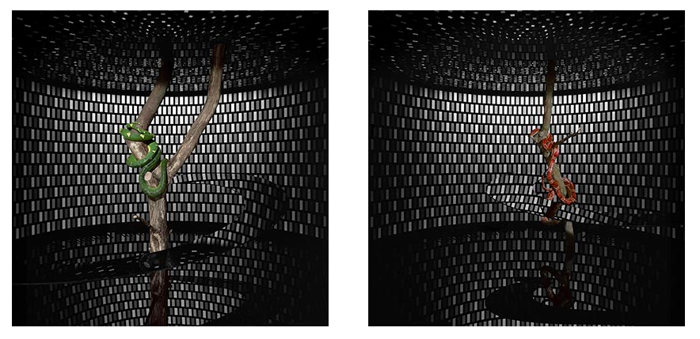
因此，SD设计师毋须说服观者相信眼见为真，更多在于用虚构的美学，让观者享受从直观感受与美的撞击到探索与心灵游戏的乐趣。
还有一种极为丰富、甚至比虚构更加有力的是那些被隐藏的真实，看起来匪夷所思，却真实存在，它们所体现的是我们平常完全不会注意到的细节。许多摄影师用还原「隐藏的真实」触及观者的心灵，例如具有震撼力的Lucinda Devlin的《电椅 Electric Chair (1991)》，精致的电椅摆在一尘不染的行刑室，简洁而纯粹的布置到底是为了尊重生命最后一秒钟的纯洁，还是毫不留情、迫不及待看着生命熄灭的冷酷。
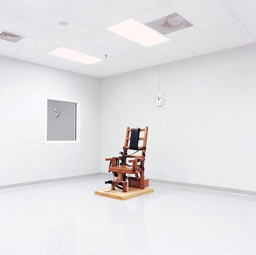
这些被隐藏的事实真正的力量在于，它们本身就游走在真实与非真实的边缘，因为这些难以置信的观感让人们在转瞬即逝中，开始相信他们早已习惯的世界之外，还存在一个他们见不到的世界，这种力量所驱动的，就是Speculation。
本篇总结
本篇的主旨是在虚构一个平行世界时美学起到的作用，这种作用是指用艺术的手段完成以下事情：
- 模糊真实与虚构的界限；
- 打破固有世界的规则和逻辑，因此大部分的表现是怪诞的；
- 表现一个不同于现实逻辑、却「理所当然」的逻辑，让观者相信这是一个新的世界；
- 还原那些不被察觉的细节，并留出大量空白供观者思考。
视觉艺术、道具模型、摄影、装置、电影等艺术形式都可以帮助设计者完成以上任务，这便是虚构一个平行世界的美学逻辑。